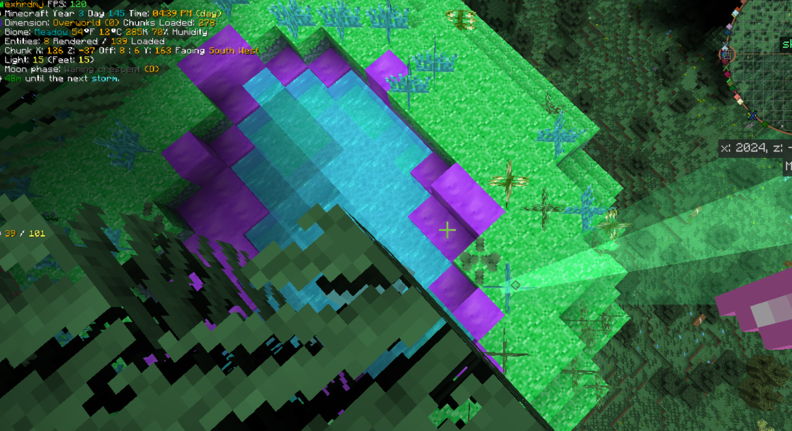
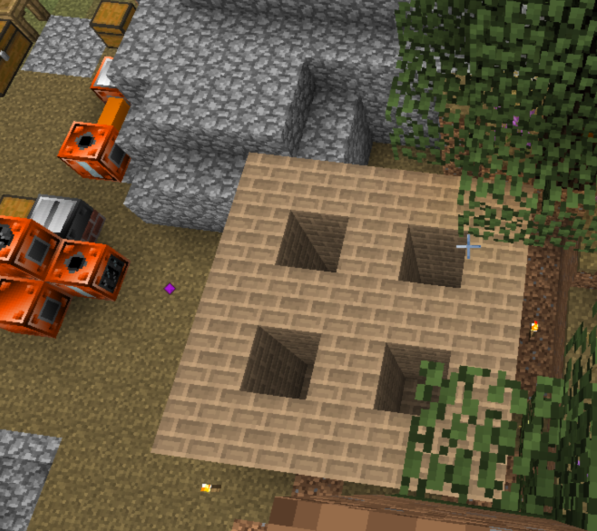
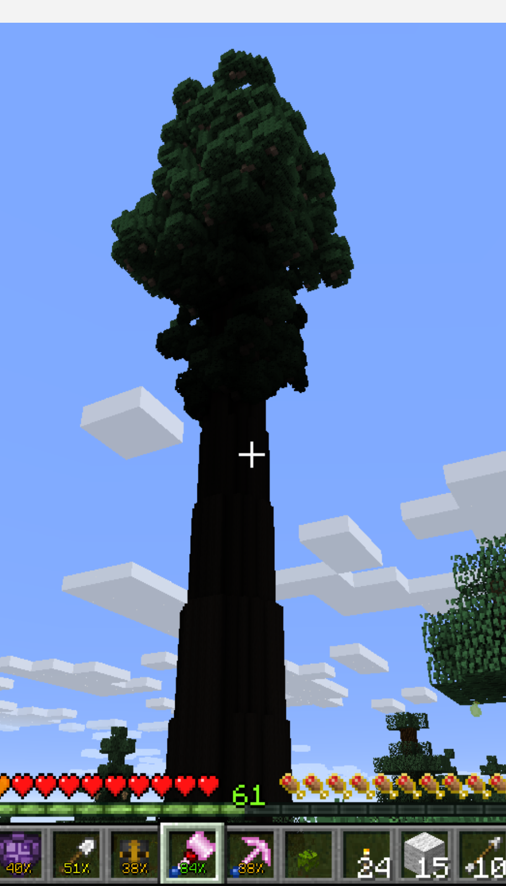
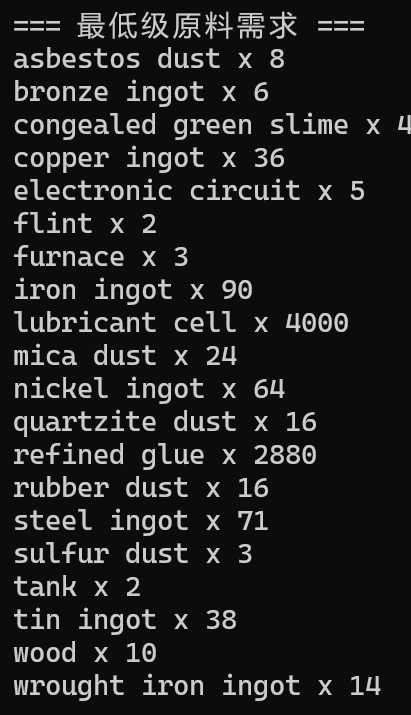

GTNH01 前情提要
在开这个文章之前。我们刚刚进入了 MV 时代。
所以我大致概括一下先前的进度。
启动
本来打算和 yl 一起开个服务器的。但他买的服务器跑不动，需要更多钱。
后面拉 xhj 加入，xhj 用他的高配电脑开了个服务器。
最终选择的是 GTNH 2.7.4，目前上最新版本。
使用 easytier 联机工具，但实测还是有时会卡顿。
GTNH 这个整合包之前我单人打过，打到接近 MV 就退出了，太肝了。
现在两个人重新启动。
石器时代
收集了点燧石造基本工具。
然后需要一个较好基地。建议选择：靠近河，靠近原油（从地下喷出来的黑色的原油），湿度 > 70%。
河可以提供初始的水和沙子燧石粘土三个造焦炉和匠魂冶炼炉的基本材料。
湿度供之后集水器使用，原油是 LV MV 阶段的燃料供给。
焦炉，第一个较肝的东西。不过相比之后的砖高炉啥都不算。
在拥有床之前每天晚上都必须跑到基地外挖三填一度过。否则怪物会淹没你的基地。
造出焦炉之后我们获得了稳定的木炭来源。拿着任务书给你的铁镐头，下矿吧。
探出第一个铜矿和锡矿还花了我们一些时间。
匠魂冶炼炉也是十分重要的。参照多方块结构任务。
初期探索建议找到这几种东西：河（这玩意到处都有），原油，村庄（书架，免费匠魂炉，各种作物），史莱姆空岛（替代粘性树脂），陨石（后期有用），银树（暮色森林前置任务，实在找不到可以用任务书换）。

这是xhj 历经千辛万苦找到的史莱姆空岛
蒸汽时代
造出第一台蒸汽锅炉后，我们成功进入了蒸汽时代。
最重要的是先把合金炉造出，提供 3铜+1锡 = 4青铜 33% 的额外产出。
然后是锻造锤，提供 3锭=2板的 33%额外产出。
建议用挖矿顺带产出的银造台太阳能锅炉，不用燃料。但是要保持白天。注意供水（白天太阳能锅炉一放下就开始加热。当温度超过 100°C，向空锅炉加水时，会发生爆炸。
我成功引发过一次。后来导档了。
我本来是打算直接造高压太阳能的，但是前置任务是普通太阳能。所以都造了。高压有 360L/s 蒸汽产出。完全足够蒸汽时代生产消耗。
在提高消耗量之后，建议造一个集水器。集水器会自动将水输出到相邻容器中，所以将太阳能锅炉紧贴集水器，你就得到了完全免费的蒸汽。
接下来是反复探矿，采矿，制造。
目标是找齐大部分矿脉：铜，铁，金，红石，青金石，煤，褐煤，钻石，云母，玄武岩矿砂。
（我直接玩英文的所以某些名词我可能乱翻译
你需要青金石和玄武岩矿砂来造出砖高炉以进入 LV。
根据任务书，一台高炉需要 36 个耐火砖块。砖高炉直接可以共用墙壁，后面我们造了 4联砖高炉，共需 100 个耐火砖块。

LV 时代
第一台 LV 我们选择了卷板机。能够提供 1 锭 = 1 板的产出。
暂时不需要蒸汽汽轮机，因为可以使用红石供电。（实际上应该选择造电线的，那玩意比卷板机提供的产出大。
从现在开始你应该提高钢产出了。建议也造 4联，如果你使用焦炭，则需要三台焦炉。
不过建议使用木炭，虽然产量稍低，但木头容易获取。找一个宏伟之木树苗，然后使用匠魂伐木斧，就可以获得几乎无尽的木头。（更离谱的是这个，红木。

一棵红木可以提供上千个木头，你甚至会损坏你的耐酸铝斧头。
当你造出轧线机和卷板机之后，你可以开始虑供电了。
太阳能锅炉+蒸汽汽轮机不会为你提供太充足的电量。
由于石油距离我们较远，且我们还没造出石化相关机器，我们选择了RC多方块锅炉。
一个 3x4x3 的 RC 低压锅炉能够提供 7200L/s 的蒸汽产出。需要消耗 45L/s 的水，所以你需要大约 3 个集水器（70% 湿度）
燃料可以参照任务书 bio for the mass（似乎是这个？），用 19 台焦炉提供的木炭和油供恰好一台 3x4x3 固体燃料低压锅炉和一台 3x4x3 液体燃料低压锅炉。（我不会告诉你我们直接开作弊拿钻石块当燃料的
一台低压锅炉的产出能提供 4.5
台蒸汽轮机一直运行。所以你目前不再缺少电力了。
至于 LV 机器，你先造的应该是，轧线机（1锭=2线缆，1锭=8精致线缆），卷板机（1锭=1板，1锭=4箔），车床（1锭=1杆+1/2粉，1螺栓=1螺丝），切割机（1板=2外壳，1杆=4螺栓），组装机（优化电路板造价）。
比较重要的是离心机，离心纯铜矿粉可以出钴粉，造切割机。磁化机也需要造，反正你 MV 也要用到。
流体提取机（液锡）。流体塑性机（结合前面可以做到 4.25 锡=1锡转子）。
石化路线需要蒸馏机，化学反应机（提供更高效的橡胶）。以及这俩能造乙烯，可以增产某些配方。
这几天捣鼓了一下石化。LVMV 阶段比较好的应该是轻燃油，含硫轻燃油 1:1 由油蒸馏得到。用氢去硫之后 5:4 得到轻燃油。轻燃油和蒸汽反应得到反复蒸汽化轻燃油（瞎编的名字）。
这个东西可以转化成乙烯。
机器造的差不多了可以去暮色森林找镍。主世界的云母矿脉也需要。
大约一组半镍和一组半钢一组铁和一组铜，半组云母。可以造出第一台 Electric Blast Furnace 电力工业高炉。
他需要四台蒸汽锅炉一起供电。
恭喜，你发现你的蒸汽产量又不够了。
工业高炉可以处理生铝，产生铝锭。但是需要一些氮。60s 一个铝锭。（产的比我钢还快。
我们打算再造一台，刚刚造出的一台用于生产钢。24s 一个钢，但钢需要氧气。氧气离心 80s 才能产出一个。
不过完全自动化，比砖高炉好。
在LV时代我让chatgpt帮忙写个了程序算合成表，我懒（

后面发现根本没必要，因为 GTNH 的 JEI 自带这种功能